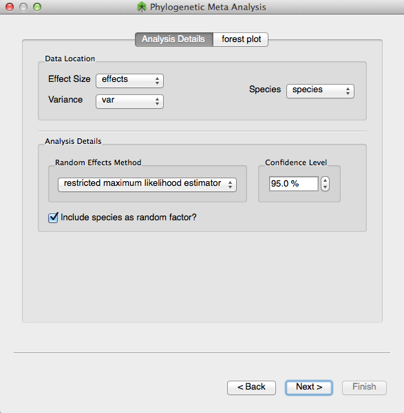
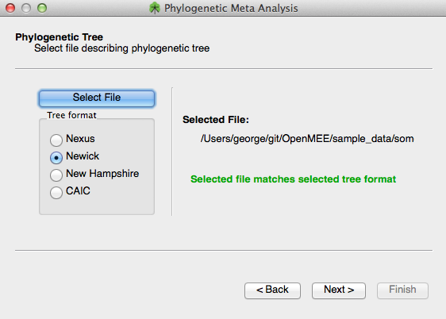

OpenMEE can also do phylogenetic meta-analysis. What this means in practice is that OpenMEE can use a phylogenetic tree to augment the variance for each study based on a SPECIES covariate. As shown below, the phylogenetics meta-analysis wizard requires you to select a column representing the species.

Figure 1. Choose effect size and variance and also a species column
You then have to select a phylogenetic tree file. The file must contain species that match those in the previously selected SPECIES column exactly. The file can be in Nexus, Newick, New Hampshire, or CAIC format.

Figure 2. Choose a phylogenetic tree file
Finally, you can give details about the phylogenetic model type, specifying a Brownian-Motion or Ornstein-Uhlenbeck model.